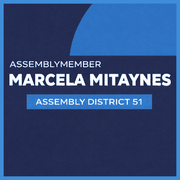
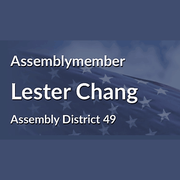

The district
 State Assembly
State Assembly State Senate
State Senate Congress
Congress Subway
Subway Citi Bike
Citi Bike NYC Ferry
NYC FerryTurn layers on and off. Tap an official's logo or a board's seal for its page. Zoning and land use lot by lot are on the land use map.
About
Council Member Alexa Avilés represents City Council District 38. It sits in Brooklyn.
The district overlaps community boards Brooklyn 6, Brooklyn 7, Brooklyn 10, Brooklyn 11 and Brooklyn 12.
It is policed by the 62nd, 66th, 68th, 72nd and 76th Precincts.
It overlaps Assembly districts 47, 49 and 51 and Senate districts 17 and 26.
First elected in 2021 and sworn in January 2022. Members of the City Council serve four year terms and are limited to two consecutive terms.
Next on the ballot in November 2029, when the seat will be open: Council Member Avilés is term limited and cannot run again. For the election in front of us, see where you vote in November 2026 or what is coming up on the calendar.
Council District 38 in numbers
The Census publishes no figures for council districts. These are the community districts Council District 38 covers.


U.S. Census Bureau, American Community Survey 2019-2023 5-year estimates.
Committees
Contact
Overlap
Community boards
Bars show how many of the district's election districts fall in each board.
Overlapping elected officials




| Brooklyn CB 7 | 53% of the council district | 78% of it |
| Brooklyn CB 6 | 19% of the council district | 33% of it |
| Brooklyn CB 10 | 14% of the council district | 18% of it |
| Brooklyn CB 11 | 10% of the council district | 15% of it |
| Brooklyn CB 12 | 5% of the council district | 7% of it |
| 72 Precinct | 53% of the council district | 77% of it |
| 76 Precinct | 15% of the council district | 48% of it |
| 68 Precinct | 13% of the council district | 18% of it |
| 62 Precinct | 10% of the council district | 15% of it |
| 66 Precinct | 5% of the council district | 7% of it |
| 78 Precinct | 3% of the council district | 7% of it |
| Sector 72B | 22% of the council district | 99% of it |
| Sector 72A | 17% of the council district | 60% of it |
| Sector 68B | 11% of the council district | 60% of it |
| Sector 76C | 10% of the council district | 98% of it |
| Sector 72C | 8% of the council district | 90% of it |
| Sector 62A | 8% of the council district | 37% of it |
| Sector 76D | 5% of the council district | 100% of it |
| Sector 72D | 5% of the council district | 65% of it |
| Sector 66C | 5% of the council district | 30% of it |
| Sector 78A | 3% of the council district | 28% of it |
| Sector 62C | 2% of the council district | 17% of it |
| Sector 68D | 2% of the council district | 12% of it |
| School District 15 | 66% of the council district | 51% of it |
| School District 20 | 34% of the council district | 21% of it |
| Senate District 26 | 59% of the council district | 36% of it |
| Senate District 17 | 39% of the council district | 34% of it |
| Senate District 22 | 2% of the council district | 1% of it |
| Assembly District 51 | 74% of the council district | 90% of it |
| Assembly District 49 | 17% of the council district | 40% of it |
| Assembly District 47 | 5% of the council district | 11% of it |
| Assembly District 46 | 2% of the council district | 3% of it |
| Assembly District 52 | 1% of the council district | 1% of it |
| Assembly District 44 | 1% of the council district | 1% of it |